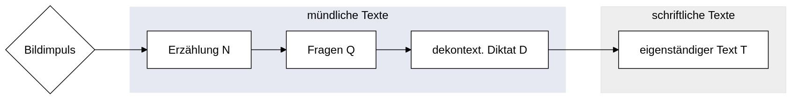
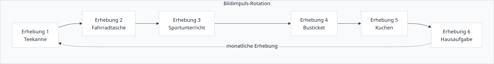
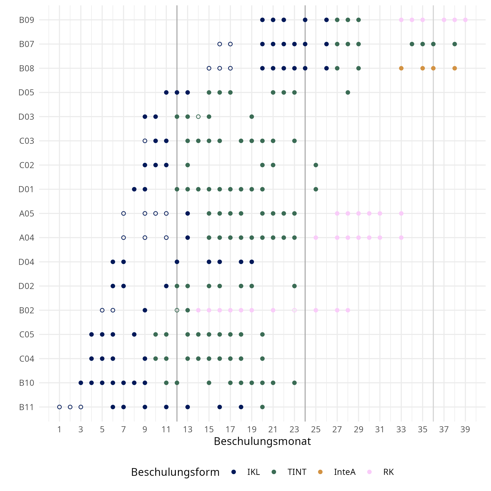

| SeiKo-Variable | SeiKo-Werte | DAKODA-Variable | DAKODA-Werte |
|---|---|---|---|
| filename | Bsp. E01_A04_Teekanne_D | ||
| reference_file | Bsp. E01_A04 | ||
| SCHULE | A; B; C | ||
| PSEUDONYM | Bsp. ORI | ||
| PUBLIZIERBAR | VollständigPublizierbar; anonymPublizierbar_ohneAudio | ||
| BESCHULUNG | IKL; TINT; RK; InteA | ||
| PROBANDIN | Bsp. A04 | ||
| ALTER_E1 | Bsp. 12 | ||
| L1 | Bsp. Italienisch | ||
| LF | Englisch; Französisch | ||
| ERHEBUNG | Bsp. E01 | ||
| ERHEBUNGSDATUM | Bsp. 2020-01-01 | ||
| BESCHULUNGSMONAT | Bsp. 8 | ||
| STORY | Teekanne; Kuchen; Hausaufgabe; Sportunterricht; Busticket; Fahrradtasche | ||
| PART | Narrative; Questions; Decontext; Text | ||
| partshort | N; Q; D; T | ||
| ZEITRAUM | SEIKO1; SEIKO2 |
2 Korpusdesign und Datenerhebung
Dieses Kapitel stellt die Grundlagen des Korpus- bzw. Erhebungsdesigns dar (vgl. Kapitel 2.1). Außerdem findet sich hier eine Übersicht zu den Datenerhebungen (vgl. Kapitel 2.2).
2.1 Korpusdesign und Ziele
Das Ziel bei der Erstellung von SeiKo war es, den Spracherwerb neu zugewanderter Schüler:innen zu begleiten, die in sogenannten Intensivklassen zur Deutschförderung an Sekundarschulen beschult werden. Diese Seiteneinsteiger:innen werden ungeachtet ihrer heterogenen Zusammensetzung auf der Grundlage als Gruppe konstruiert, dass sie zu geringe Deutschkompetenzen aufweisen, um am Regelunterricht teilnehmen zu können (vgl. Massumi & von Dewitz, 2015).
Das Korpus sollte die individuelle sprachliche Entwicklung einzelner Lerner:innen durch möglichst dichte Datenerhebungen sichtbar machen. Geplant wurde ein longitudinales Datenerhebungsschema mit Erhebungen im Abstand von etwa vier Wochen.
Herausforderungen bei der Konzeption der Datenerhebungen waren bestimmte praktische und organisatorische Gegebenheiten. Die Datenerhebungen durften insgesamt nicht mehr als 20 bis 30 Minuten pro Schüler:in in Anspruch nehmen, um die Beeinträchtigung der Lernzeit im Unterricht möglichst gering zu halten. Die Aufgaben selbst mussten so strukturiert sein, dass sie einerseits von Lerner:innen, die erst eine kurze Beschulungsdauer und eine kurze Kontaktzeit mit dem Deutschen aufweisen, trotz sehr geringer Deutschkenntnisse ohne Frust bearbeitet werden können und andererseits fortgeschrittene Lerner:innen nicht langweilen. Die Erhebungen mussten gleichzeitig gewährleisten, dass das erhobene Sprachmaterial sowohl über den Erwerbsverlauf einer Lerner:in als auch für die anderen Lerner:innen in der Gruppe vergleichbar ist. Daher wurde ein mehrfach gestuftes Erhebungsdesign konzipiert, das im Folgenden dargestellt wird.
Das Erhebungsdesign besteht aus einem individuellen Interviewsetting, das vom Vorgehen in Wiese (2020) inspiriert ist. Ziel ist die Erhebung mündlicher und schriftlicher Texte, die je zu einer bestimmten kommunikativen Aufgabe produziert werden sollen (vgl. Abbildung 2.1). Hintergrund dieser Variation in Modalität und Aufgabe sind die kontextuellen Bedingungen, in denen und für die die Schüler:innen lernen: Für das erfolgreiche Bestehen in der Regelklasse sind das Beherrschen zunehmend dekontextualisierter Sprache und der selbstständige schriftliche Ausdruck notwendig; Schüler:innen müssen eigenständig zwischen unterschiedlichen sprachlichen Registern variieren und sich dem sozialen Kontext anpassen können. Um die Entwicklung der entsprechenden Fähigkeiten modellieren zu können, wurden daher sowohl mündliche und alltagsnahe (Teil N und Q), mündliche und dekontextualisierte (Teil D) als auch schriftliche dekontextualisierte Daten (Teil T) erhoben, die die Registerdifferenzierung der Seiteneinsteiger:innen erfassen sollen.
Jeder Erhebungszeitpunkt gliedert sich in vier entsprechende Aufgaben, die auf Grundlage einer Bildergeschichte als Stimulus produziert werden.

Die Bildstimuli stellen alltagsnahe Situationen in der Schule (Hausaufgaben und Sportunterricht), im häuslichen Umfeld (Teekanne und Kuchen) und im öffentlichen Raum (Busticket und Fahrradtasche) dar, in denen jeweils eine Problemsituation entsteht.1 Zum Beispiel wird in der Geschichte Fahrradtasche der Diebstahl einer Fahrradtasche auf einem Markt beobachtet. Grundsätzlich werden im Erhebungsverlauf alle Bildergeschichten in einem Turnus als Stimuli angeboten (vgl. Abbildung 2.2), sodass jede Geschichte sich maximal viermal im gesamten Erhebungsverlauf wiederholt. (Die meisten Schüler:innen bemerkten nach ein paar Monaten, dass die Auswahl der Geschichte nicht wie zuvor suggeriert zufällig ist und dass sich die Geschichten wiederholen. In diesem Fall wurde den Schüler:innen das Vorgehen erklärt. In keinem Fall führte das zu einem Abfall an Motivation bei der Teilnahme.)

Teil N - mündliche Erzählung
Zunächst wählen die Schüler:innen vermeintlich zufällig eine Geschichte aus, die in einem Umschlag verborgen ist, und werden dazu aufgefordert, die Bilder zunächst allein zu betrachten. Dann sollen sie für die Interviewer:in das dargestellte Geschehen nacherzählen, ohne die Bilder zu zeigen. Durch dieses Vorgehen sollen die Schüler:innen davon ausgehen, dass die Interviewer:in nicht weiß, welche Geschichte erzählt werden soll. Zusätzlich sollen die Bilder nicht offen gezeigt werden, damit kein geteilter Referenzraum entsteht und die Schüler:innen möglichst umfangreich erzählen. Die Interviewer:in soll hier lediglich mit ermunternden Rezeptionssignalen interagieren.
Teil Q - Fragen zur Erzählung
Wenn die Schüler:innen die Erzählung beendet haben, hat die Interviewer:in im zweiten Interviewteil die Gelegenheit, Rückfragen zu stellen und damit weitere Handlungselemente, Beschreibungen etc. zu erfragen.2 Hier kann eine grundsätzliche Sicherung aller in der Bildergeschichte dargestellten Handlungsschritte erfolgen. Dabei wird die Geschichte auch auf den Tisch gelegt, sodass beide Gesprächsteilnehmer:innen die Bilder sehen können.
Teil D - Dekontextualisierung durch Diktieren eines Berichts
Im folgenden Interviewteil werden die Schüler:innen dazu aufgefordert, das Geschehen noch einmal für eine nicht anwesende Person zu berichten. Im Falle des obigen Beispiels der gestohlenen Fahrradtasche wird etwa erklärt, dass die bestohlene Frau den Vorfall selbst nicht beobachten konnte und nun einen Bericht für die Polizei benötigt. Das Vorgehen schließt dabei ein, dass die Interviewer:in diesen Bericht aufschreibt, während die Schüler:innen diesen diktieren sollen. Die Interviewer:in verschriftlicht den mündlichen Bericht nicht tatsächlich; es geht im Teil D um die mündliche Produktion.
Teil T - eigenständige schriftliche Textproduktion
Nach dem letzten Interviewteil sollen die Schüler:innen den Bericht schließlich noch einmal selbst verfassen. Die Idee der Trennung in Teil D und T besteht darin, dass durch den Teil D (ggf.) konzeptionell schriftliche Texte auch dann erhoben werden können, wenn die Schüler:innen selbst mit den Anforderungen des medialen Schreibens noch überfordert sind.
Zusätzlich wurde bei jeder Datenerhebung auch ein freier Interviewteil erhoben, der jedoch für das Korpus nicht aufbereitet wurde. In diesem wurden entweder Angaben zu den Metadaten erfragt oder über den Unterricht und Schulalltag sowie Freizeitaktivitäten gesprochen.
Metadaten
Die Erhebung von Metadaten des Korpus war durch das notwendige Genehmigungsverfahren leider stark beschränkt. Neben den erhebungsspezifischen Metadaten konnte für jede Schüler:in das Alter bei der ersten Erhebung, gesprochene Sprachen und deren Erwerbskontext, die Beschulungsdauer und der Beschulungskontext (exklusiver Besuch einer Intensivklasse, Teil- bzw. Vollintegration in die Regelklasse) für jede Datenerhebung erfasst werden.
2.2 Datenerhebung, Datenerhebungszeitpunkte
Die Datenerhebungen zu SeiKo fanden in zwei Erhebungswellen von Mai 2021 bis April 2023 (SeiKo1) und von Mai 2024 bis September 2025 (SeiKo2) statt. Ursprünglich konnten 21 Schüler:innen für die Teilnahme gewonnen werden, durch Fluktuation und beschränkte Zustimmung zur Publikation der Daten konnten schließlich 17 individuelle Datenreihen im veröffentlichten Korpus inkludiert werden.
Alle teilnehmenden Schulen, Lehrer:innen, Schüler:innen und deren Sorgeberechtigten wurden vorab über die Abläufe und Ziele der Datenerhebungen informiert und gaben ihr Einverständnis. (Alle Informationsschreiben und Formulare wurden dabei sowohl auf Deutsch als auch in Übersetzung in eine Erst- oder andere gewünschte Sprache vorgelegt.) Außerdem wurde eine offizielle Genehmigung der Schulaufsichtsbehörde für die Datenerhebung eingeholt.
Insgesamt wurden an 75 Tagen Datenerhebungen durchgeführt, aus denen eine Sammlung von 217 N-Texten, 196 Q-Texten, 215 D-Texten und 196 T-Texten resultiert. (Nicht bei jeder Erhebung haben alle Schüler:innen alle Textteile realisiert. Eine Übersicht der Gesamtkorpusgröße findet sich in Kapitel 1.3.)
Abbildung 2.3 zeigt die individuellen Datenerhebungszeitpunkte je Schüler:in (inkl. des jeweiligen Beschulungskontextes: IKL steht für Intensivklasse, TINT für Teilintegration, InteA für eine Intensivklasse an einer berufsbildenden Schule und RK für Regelklasse). Im Durchschnitt liegen 12,76 Erhebungszeitpunkte pro Schüler:in vor (min. 7, max. 20). Ungefüllte Punkte bei den Erhebungszeitpunkten markieren Erhebungen ohne T-Texte.

2.3 Metadaten
Eine individuelle Darstellung der Metadaten findet sich in den zugangsbeschränkten Korpusdaten (vgl. Kapitel 1.5) Eine Übersicht der Metadatenvariablen finden sich in Tabelle 2.1.
Allgemein lag das Alter der Schüler:innen bei der ersten Erhebung lag im Durchschnitt bei 12,65 Jahren (min. 10, max. 16 Jahre). Die Beschulungszeit bei der ersten Erhebung lag im Durchschnitt bei 8,24 Monaten (min. 1, max. 20). Tabelle 2.2 zeigt die angegebenen Sprachkenntnisse (wobei vier Schüler:innen bei L1 mehrere Angaben machten).
| Sprache | L1 | L2 |
|---|---|---|
| Arabisch | 5 | - |
| Dari | 2 | - |
| Englisch | - | 12 |
| Französisch | - | 1 |
| Italienisch | 2 | - |
| Kurmanci | 2 | - |
| Polnisch | - | 2 |
| Rumänisch | 1 | - |
| Russisch | 2 | 1 |
| Somali | 1 | - |
| Türkisch | 4 | 5 |
| Ukrainisch | 2 | - |
Das gesamte Stimulusmaterial findet sich im Anhang unter Kapitel 11.1.↩︎
Der dafür genutzte Leitfaden für jede Geschichte findet sich in Kapitel 11.2.↩︎